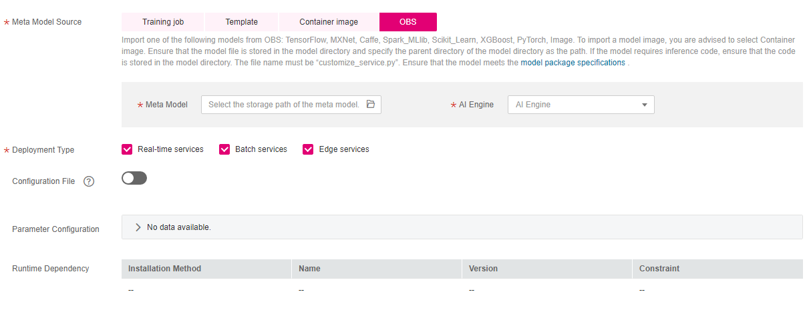
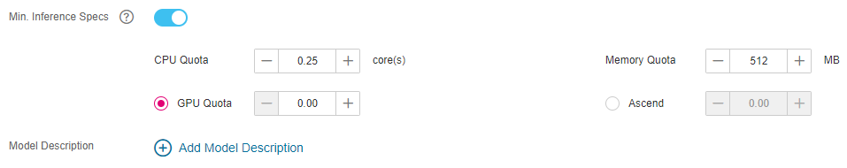

In scenarios where frequently-used frameworks are used for model development and training, you can import the model to ModelArts for unified management.
Prerequisites
- The model has been developed and trained, and the type and version of the AI engine it uses is supported by ModelArts. Common engines supported by ModelArts and their runtime ranges are described as follows:
- The imported model, inference code, and configuration file must comply with the requirements of ModelArts. For details, see Model Package Specifications, Specifications for Compiling the Model Configuration File, and Specifications for Compiling Model Inference Code.
- The model package that has completed training, inference code, and configuration file have been uploaded to the OBS directory.
- The OBS directory you use and ModelArts are in the same region.
Procedure
- Log in to the ModelArts management console, and choose Model Management > Models in the left navigation pane. The Models page is displayed.
- Click Import in the upper left corner. The Import page is displayed.
- On the Import page, set related parameters.
- Set basic information about the model. For details about the parameters, see Table 1.
Table 1 Parameters of basic model information Parameter
Description
Name
Model name. The value can contain 1 to 64 visible characters, including Chinese characters. Only letters, Chinese characters, digits, hyphens (-), and underscores (_) are allowed.
Version
Version of the model to be created. For the first import, the default value is 0.0.1.
Label
Model label. A maximum of five model labels are supported.
Description
Brief description of the model
- Select the meta model source and set related parameters. Meta Model Source has four options based on the scenario. Set Meta Model Source to OBS. For details about the parameters, see Table 2.
For the meta model imported from OBS, you need to compile the inference code and configuration file by referring to Model Package Specifications and place the inference code and configuration files in the model folder storing the meta model. If the selected directory does not contain the corresponding inference code and configuration files, the model cannot be imported.
Figure 1 Setting Meta Model Source to OBS
Table 2 Parameters of the meta model source Parameter
Description
Meta Model
Select the model storage path. This path is the training output path specified in the training job.
AI Engine
The corresponding AI engine is automatically associated based on the selected meta model storage path.
Deployment Type
After the model is imported, select the service type that the model is deployed. When deploying a service, you can only deploy the service type selected here. For example, if you only select Real-time services here, you can only deploy real-time services after importing the model.
Configuration File
By default, the system associates the configuration file stored in OBS. Enable the function to view, edit, or import the model configuration file from OBS.
Parameter Configuration
Click
 on the right to view the input and output parameters of the model.
on the right to view the input and output parameters of the model.Runtime Dependency
List the dependencies of the selected model on the environment.
- Set the inference specifications and model description.
- Min. Inference Specs: If your model requires certain resources to complete inference, you can configure this parameter to set the minimum specifications required for normal inference after the model is deployed as a service. In later versions, the system will allocate resources based on the inference specifications in service deployment. You can also modify the specifications as required during deployment. Note that the specifications configured here are valid only when real-time services are deployed and the dedicated resource pool is used.
- Model Description: To help other model developers better understand and use your models, provide model descriptions. Click Add Model Description and then set the document name and URL. A maximum of three model descriptions are supported.
Figure 2 Setting the inference specifications and model description
 - Check the information and click Create Now. The model is imported.
In the model list, you can view the imported model and its version. When the model status changes to Normal, the model is successfully imported. On this page, you can create new versions, quickly deploy models, publish models to the market, and perform other operations.
- Set basic information about the model. For details about the parameters, see Table 1.
Follow-Up Procedure
- Model Deployment: On the Models page, click the triangle next to a model name to view all versions of the model. Locate the row that contains the target version, click Deploy in the Operation column, and select the deployment type configured when importing the model from the drop-down list. On the Deploy page, set parameters by referring to Introduction to Model Deployment.